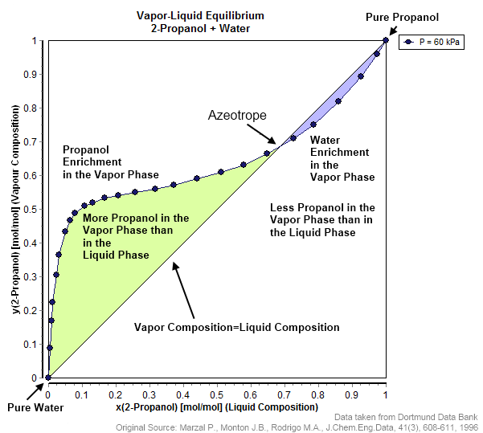
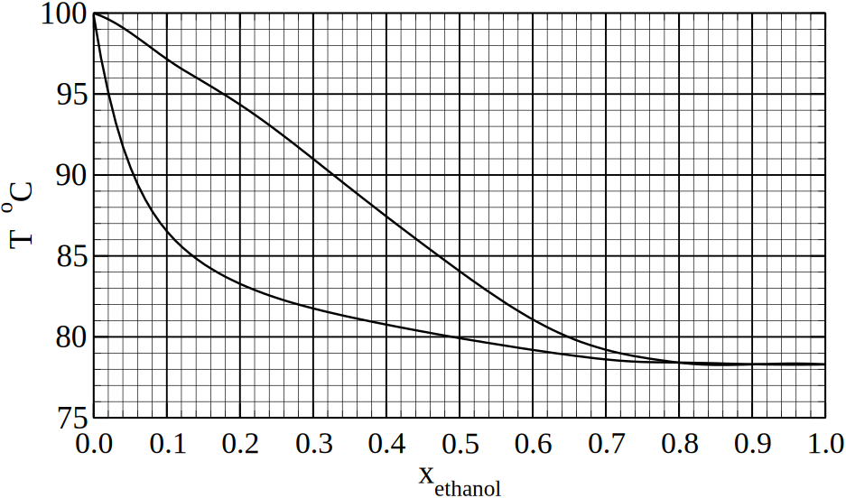
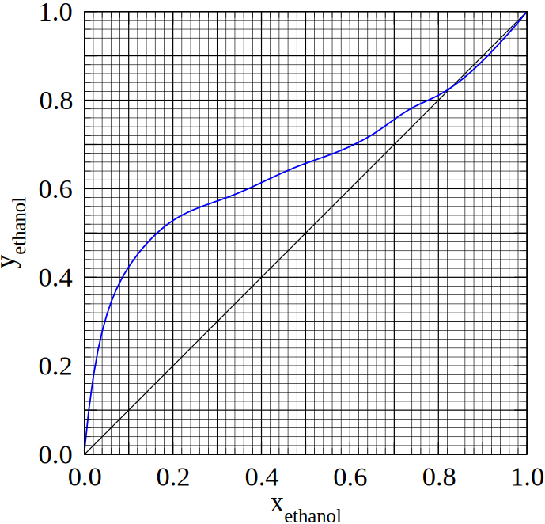
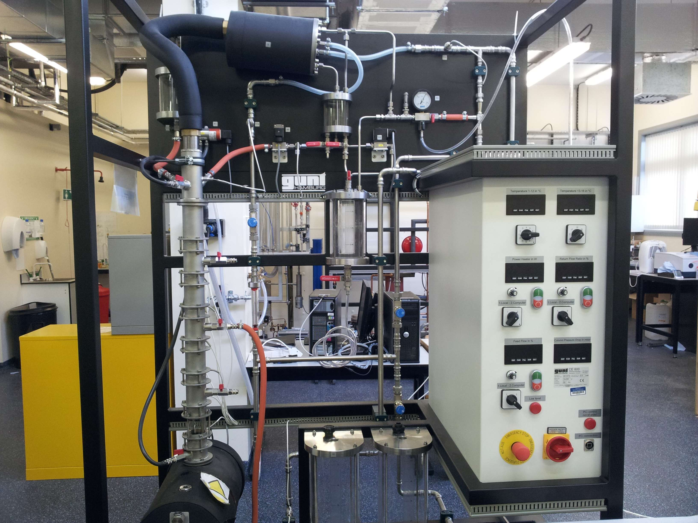
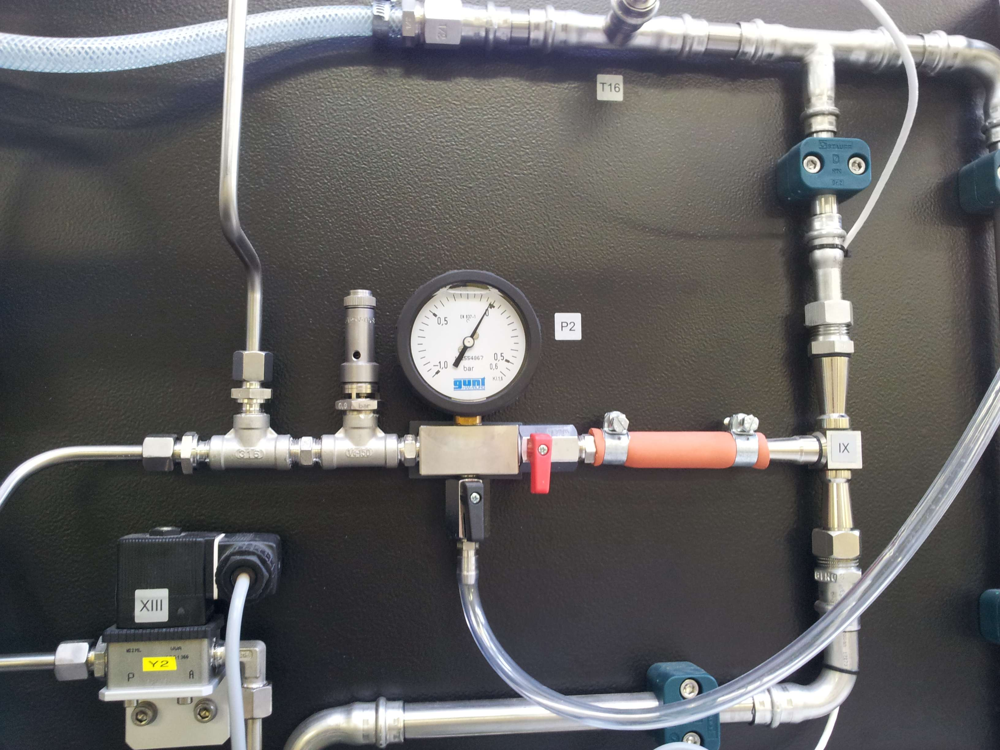
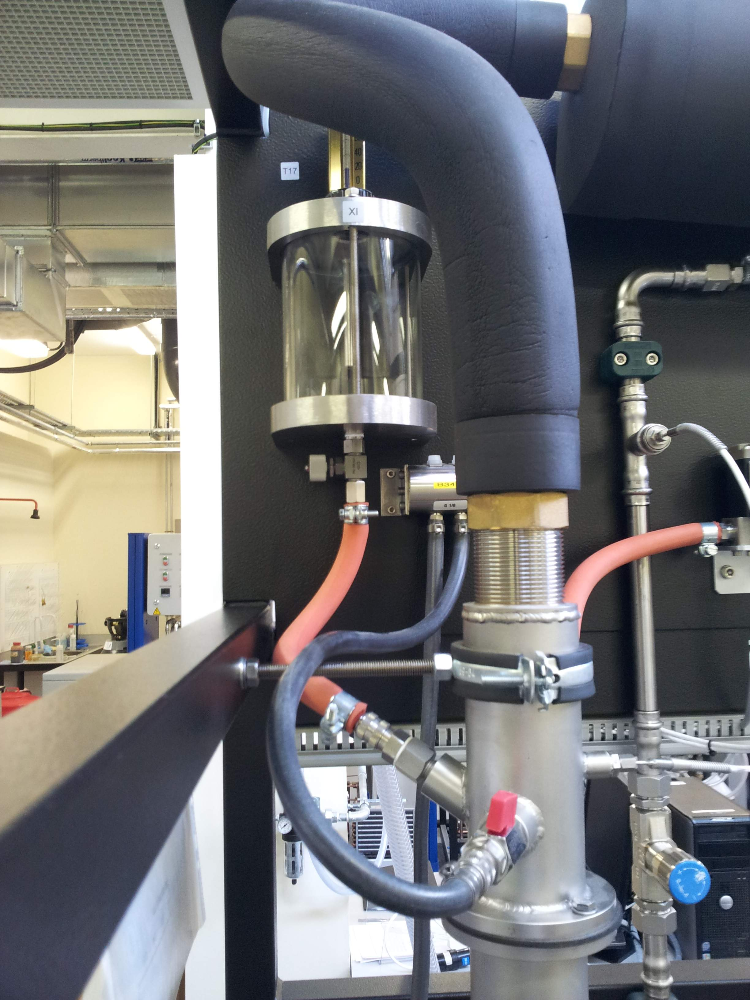

Breaking Azeotropes and Absorption Tricks




- In many azeotropic systems, pressure swing distillation is ineffective.
- For example, in the ethanol-water system above, the relative volatility for the high concentrations of ethanol is close to $\alpha\approx1$ !
- What other methods are available for breaking azeotropes?
-
To break this azeotrope, we must either:
- Modify the VLE behaviour of the mixture using another component.
- Use an alternative separation technique.
- Alternative separation techniques may be used to just to completely separate the azeotropic mixture, or just to help distillation get past the azeotrope.



- The final technique we'll mention is the use of an entrainer.
- This is an additional component added to the column to alter the VLE behaviour of the mixture.
- In Extractive distillation the entrainer is a non-volatile component that exits in the bottom product and binds strongly to only one of the components.
- This technique can be thought of as a combination of liquid-liquid extraction and distillation occurring in one column at the same time.

- In azeotropic distillation, an entrainer is added which is volatile and exits the column in the top-product.
- This method is called azeotropic distillation as a new ternary azeotrope is often formed, but this azeotrope will be at lower concentrations than the binary azeotrope.
- The distillation can then be continued up to high purities, but a recovery strategy must be devised to recover the entrainer.
- This technique is quite popular for the dehydration of ethanol…





- In multi-stage absorbtion, we have an operating line of the following form. \begin{align} L'\frac{x_{A,i}}{1-x_{A,i}}+V'\frac{y_{A,j+1}}{1-y_{A,j+1}}&=L'\frac{x_{A,j}}{1-x_{A,j}} + V'\frac{y_{A,i+1}}{1-y_{A,i+1}} \end{align}
- We also have some equilibrium data, which at typical absorber concentrations can described by Henry's law \begin{align*} y = \mathcal{H} x \end{align*}
- The solution of these equations is just the same as for multi-stage distillation. We draw the operating line and the equilibrium line and step between the two.

\begin{align} L'\frac{x_{A,i}}{1-x_{A,i}}+V'\frac{y_{A,j+1}}{1-y_{A,j+1}}&=L'\frac{x_{A,j}}{1-x_{A,j}} + V'\frac{y_{A,i+1}}{1-y_{A,i+1}} \end{align}
- One of the biggest difficulties of absorber design is that you have to alter the operating line a lot.
- In distillation, the operating line is straight due to the assumption of constant molar overflow.
- But in absorption, we must plot several points to capture its curvature (see right).
- Can we make the operating line straight using a change of variables?
- Defining two new variables: \begin{align*} X&=\frac{x}{1-x} & Y&=\frac{y}{1-y} \end{align*}
- We can rewrite the operating line in terms of these variables. \begin{align} L' X_i+V' Y_{j+1}&=L' X_j + V' Y_{i+1} \end{align}
- Rearranging then gives us a convenient linear form: \begin{align*} Y_{A,j+1}&=\frac{L'}{V'}\left(X_{A,j}-X_{A,i}\right)+ Y_{A,i} \end{align*}
- We can easily convert back from these new variables too: \begin{align*} y &= \frac{Y}{1+Y} & x&=\frac{X}{1+X} \end{align*}
- This form is much more convenient to plot, as it is a straight line on a XY plot.
- It is also very easy to convert from $x\to X$ or $y\to Y$.
- The only difficulty is that the equilibrium line is no longer straight. \begin{align*} y &= \mathcal{H} x & Y &= \frac{\mathcal{H} x}{1+\mathcal{H} x} \end{align*}
- However, if XY graphs for the equilibrium data have been prepared once, it is much more convenient to perform the design in these variables.